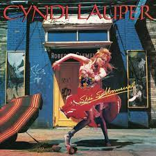
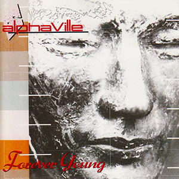
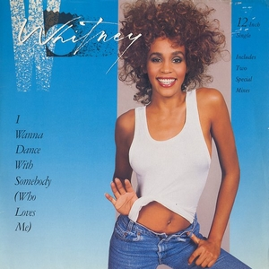
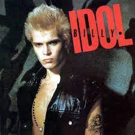

O RetroGroove80s é uma homenagem à era dourada da música, onde os anos 80 trouxeram uma explosão de artistas inovadores e hits inesquecíveis. Explore nossa coleção de músicas que capturam a essência dessa década vibrante e repleta de estilo.
Um dos maiores sucessos de Cyndi Lauper, com uma batida contagiante e mensagem empoderadora.
Um clássico atemporal do Alphaville que evoca nostalgia e sentimentos de juventude eterna.
Um sucesso inesquecível de Whitney Houston, perfeito para quem quer se soltar na pista de dança.
"Thriller" é uma música icônica de Michael Jackson que se tornou um fenômeno mundial. Lançada como o sétimo single do álbum homônimo de 1982, "Thriller" é conhecida por seu videoclipe revolucionário e coreografia memorável.
"Dancing with Myself" é uma canção energética de Billy Idol que captura a essência do espírito punk e new wave dos anos 80. Lançada inicialmente com a banda Generation X em 1980, a versão solo de Billy Idol, lançada em 1981, tornou-se um sucesso internacional.
"Livin' On A Prayer" é um clássico da banda Bon Jovi, lançado no álbum "Slippery When Wet". A música é conhecida por seu poderoso refrão e letras envolventes, capturando a essência do espírito otimista. Uma verdadeira canção emblemática dos anos 80 que continua a ser amada por fãs de todas as idades.